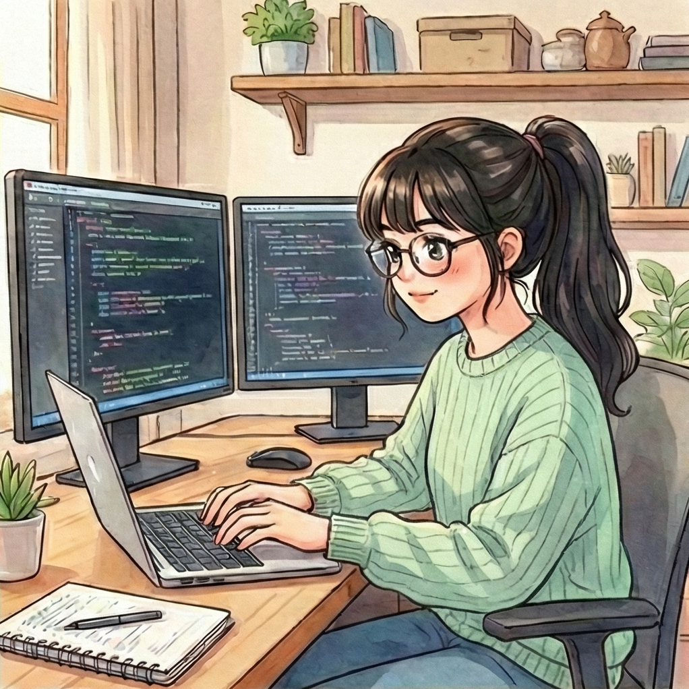
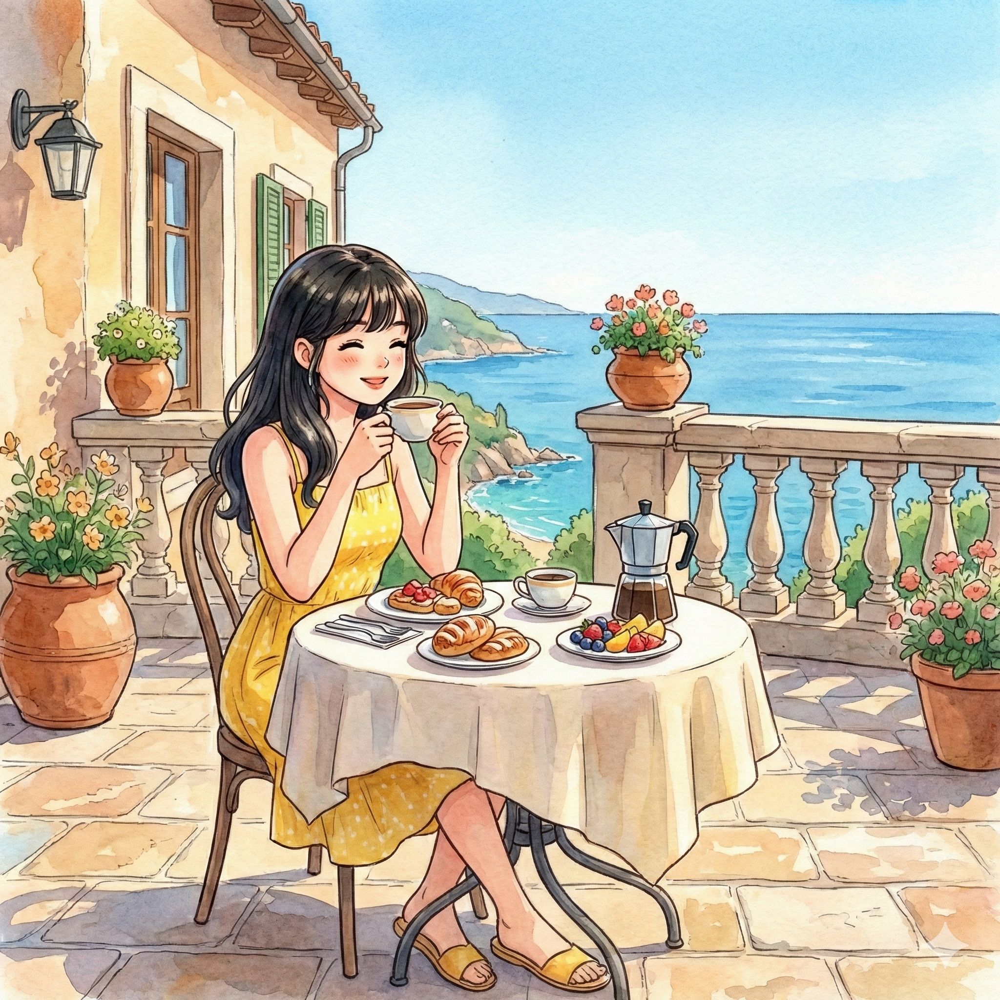
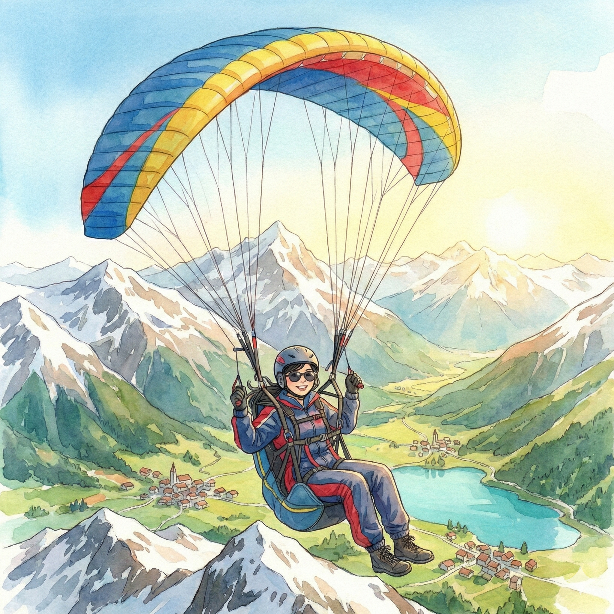

Hi, I'm Jane Wang




Engineer. MBA. Explorer. Building things with code. Chasing every ball on the court. Experimenting in the kitchen. Getting my hands dirty with clay. Discovering the world, one trip at a time. Always chasing the next adventure.
From writing code at Google to pursuing my MBA at Wharton, I'm driven by curiosity and a love for building things that matter. Welcome to my corner of the internet.
🌸
What Defines Me
Software engineer turned MBA candidate who loves tennis, pottery, cooking, traveling, and getting lost in a good book.
Explore My Hobbies🚀
Recent Work
From color palette generators to habit trackers, I love building small tools that solve real problems.
View My Projects✍️
Latest Writing
Thoughts on code, learning, career pivots, and finding balance in a busy world.
Read My Blog